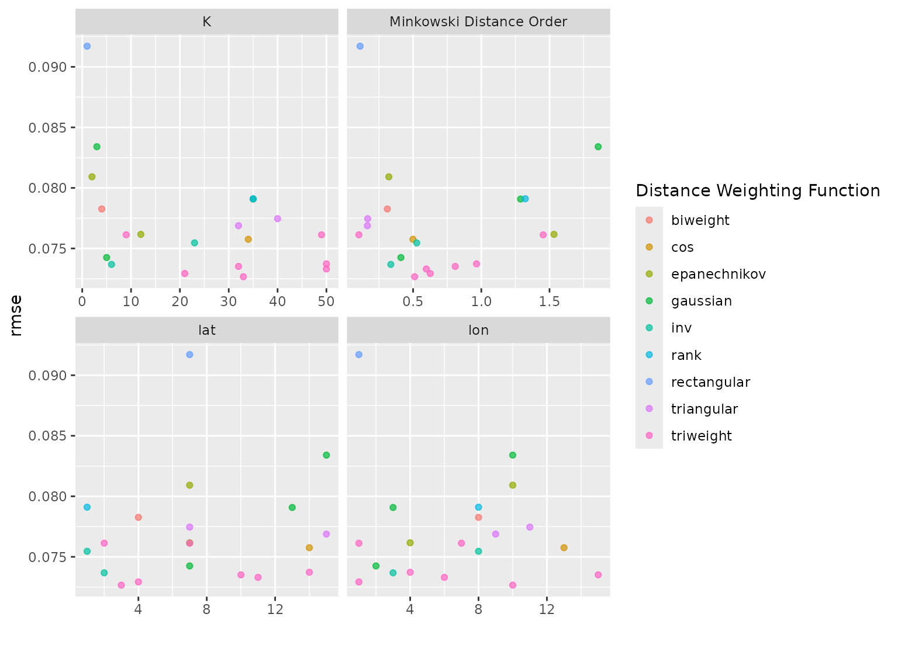

Plot tuning search results
# S3 method for tune_results autoplot( object, type = c("marginals", "parameters", "performance"), metric = NULL, width = NULL, ... )
Arguments
| object | A tibble of results from |
|---|---|
| type | A single character value. Choices are |
| metric | A character vector or |
| width | A number for the width of the confidence interval bars when
|
| ... | For plots with a regular grid, this is passed to |
Value
A ggplot2 object.
Details
When the results of tune_grid() are used with autoplot(), it tries to
determine whether a regular grid was used.
Regular grids
For regular grids with one or more numeric tuning parameters, the parameter with the most unique values is used on the x-axis. If there are categorical parameters, the first is used to color the geometries. All other parameters are used in column faceting.
The plot has the performance metric(s) on the y-axis. If there are multiple metrics, these are row-faceted.
If there are more than five tuning parameters, the "marginal effects" plots are used instead.
Irregular grids
For space-filling or random grids, a marginal effect plot is created. A panel is made for each numeric parameter so that each parameter is on the x-axis and performance is on the y-xis. If there are multiple metrics, these are row-faceted.
A single categorical parameter is shown as colors. If there are two or more
non-numeric parameters, an error is given. A similar result occurs is only
non-numeric parameters are in the grid. In these cases, we suggest using
collect_metrics() and ggplot() to create a plot that is appropriate for
the data.
If a parameter has an associated transformation associated with it (as determined by the parameter object used to create it), the plot shows the values in the transformed units (and is labeled with the transformation type).
Parameters are labeled using the labels found in the parameter object
except when an identifier was used (e.g. neighbors = tune("K")).
See also
Examples
# \donttest{ # For grid search: data("example_ames_knn") # Plot the tuning parameter values versus performance autoplot(ames_grid_search, metric = "rmse")# For iterative search: # Plot the tuning parameter values versus performance autoplot(ames_iter_search, metric = "rmse", type = "marginals")  # Plot tuning parameters versus iterations autoplot(ames_iter_search, metric = "rmse", type = "parameters")
# Plot performance over iterations autoplot(ames_iter_search, metric = "rmse", type = "performance")
# }